Game & Interactive Work
SELECT A DISCIPLINE / EXPLORE A DIFFERENT SIDE
Rules that invite players to explore.
Digital worlds and tabletop experiments, exploring player choice, spatial challenges, and the surprises that emerge through playtesting.
Showing 6 projects in Game Design.
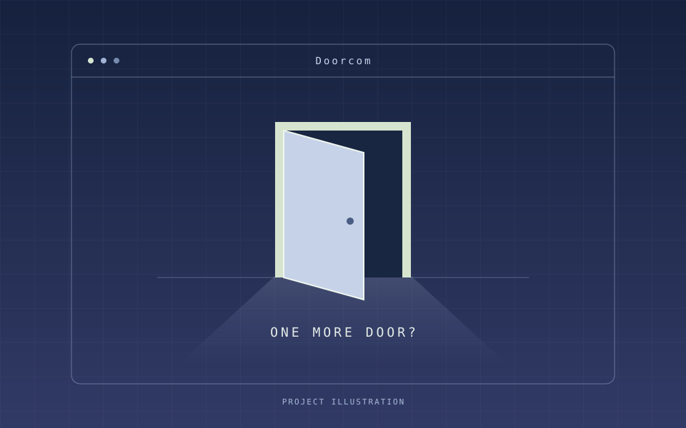
Doorcom
Collaborative Unity Prototype · In Development · 2026
A surreal first-person exploration game that turns a social media feed into rooms to enter, puzzles to solve, and a choice to disconnect.
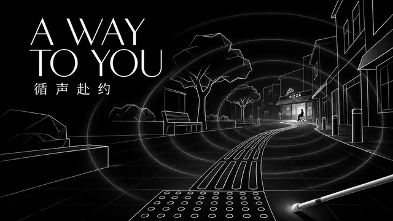
A Way to You
Solo Course Project · 3 weeks · 2026
A first-person exploration prototype where sound and fading echoes guide you to a friend—and a route you can both take.
Trick or Treat
USC · Tabletop Game · 2026
A four-player tabletop game about fitting candy into a limited basket, building scoring groups, and disrupting your friends with Trick Cards.
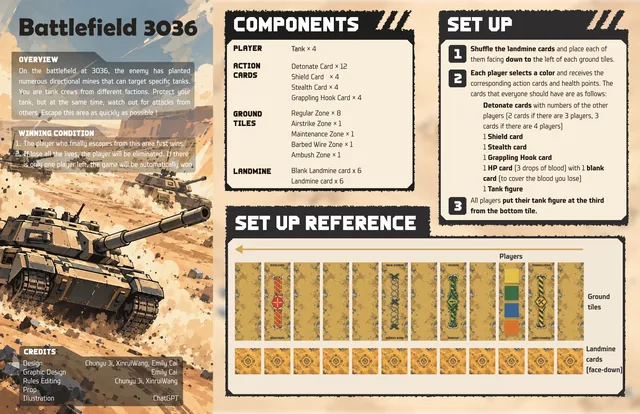
Battlefield 3036
USC · Tabletop Game · 2026
A competitive tabletop escape game where tank crews navigate hidden mines and balance attacking rivals against protecting themselves.
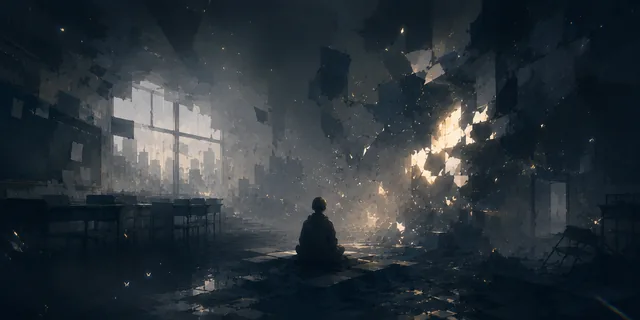
Shattered Light
Thesis & Ongoing Prototype · 2026
Role: Solo Game Designer, Level Designer, Researcher & Unity Developer
A narrative prototype about taking small actions under stress, now featuring a reworked chapter about presentation anxiety and support.
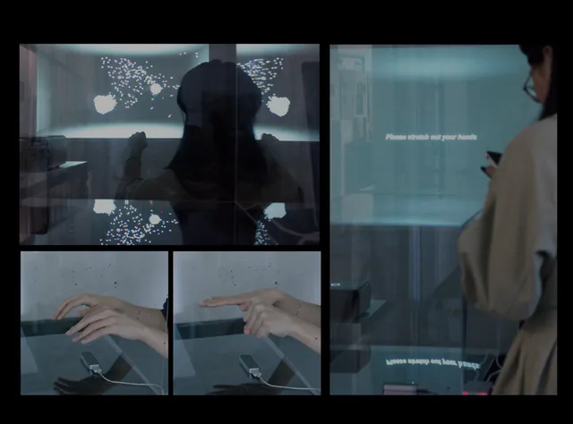
SELF
Sept 2025 - Nov 2025
A self-reflection installation where hand gestures shape a digital avatar and evolving particle field, translating shifts between solitude and social pressure into real-time visual feedback.
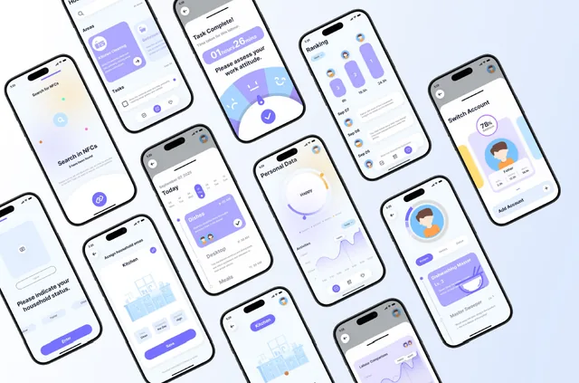
ShareHouse
July 2025 - Oct 2025
A household collaboration app that makes domestic and emotional labor visible through NFC task tracking, shared scheduling, contribution data, and family-friendly feedback.
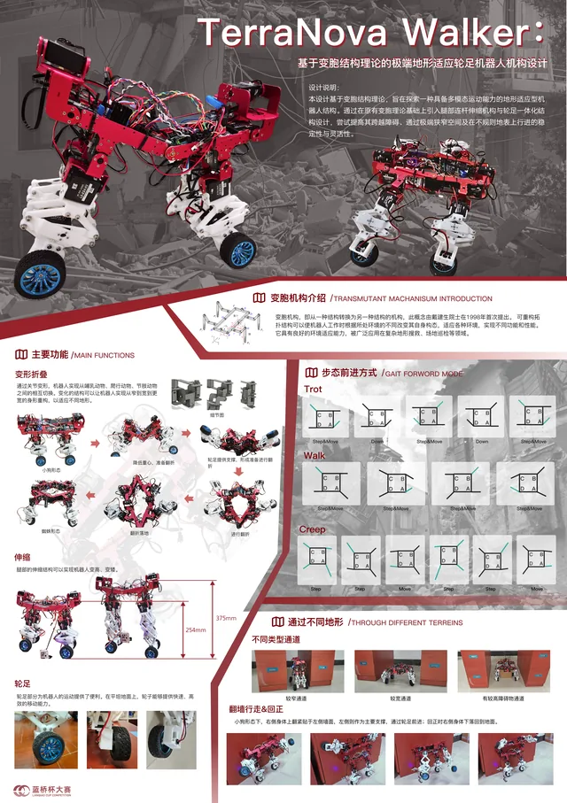
TerraNova Walker
Jan 2025 - Apr 2025
A metamorphic robot built around three movement states and multiple Arduino-controlled gaits, exploring traversal rules, state transitions, and adapting movement to different terrain.
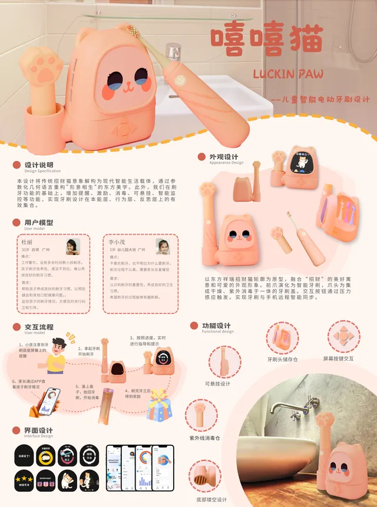
Luckin Paw
Sept 2024 - Dec 2024
A children's oral-care experience built around a repeatable action-and-reward loop, multimodal feedback, and playful physical interactions without relying on screen time.
Who Am I
Project Date
An introspective design exploration examining personal identity through interactive media, questioning the relationship between self-perception and external representation.
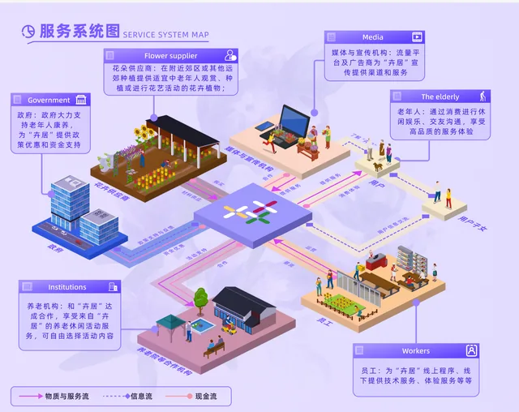
Huiju Flower Shop
Mar 2025 - Jun 2025
Service design project for middle-aged and elderly flower enthusiasts, combining floral aesthetics, emotional healing, and light social experiences through physical space and digital app integration.
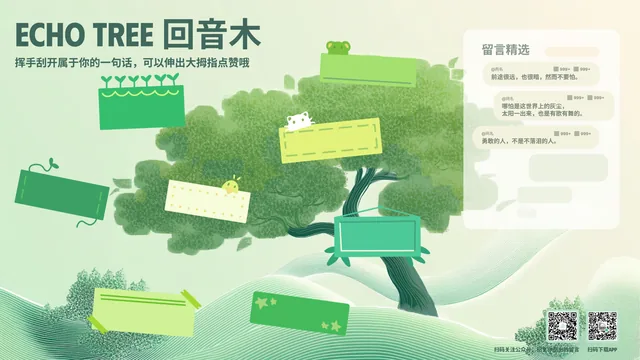
Echo Wood
Apr 2025 - Jun 2025
A public interactive “tree hollow” for waiting spaces. Hand gestures uncover messages by theme, then invite visitors to share, react, and continue the conversation through a QR-linked service.
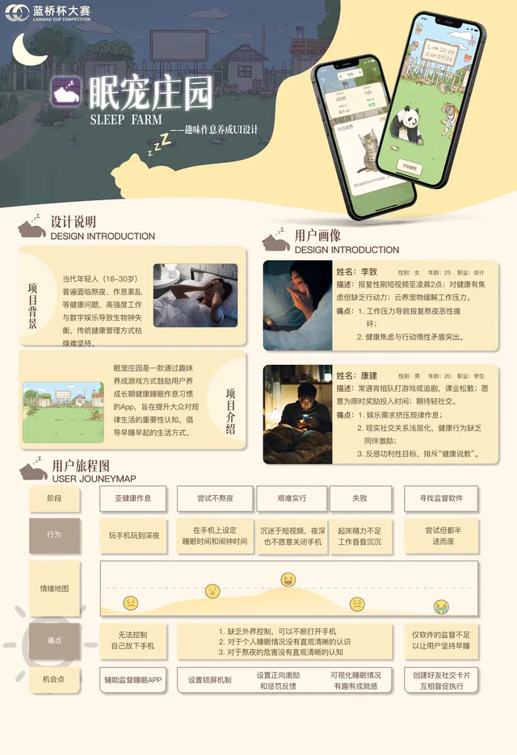
Sleep Pet Manor
Mar 2025 - Apr 2025
A habit-building game concept with a repeatable sleep-and-reward core loop, pet collection, progression goals, and cooperative challenges that unlock rare species.
Ergonomic Mouse
Oct 2024 - Nov 2024
An ergonomic mouse for women aged 18–25, grounded in a 42-response survey, hand-landmark analysis, five clay prototypes, and user form testing.
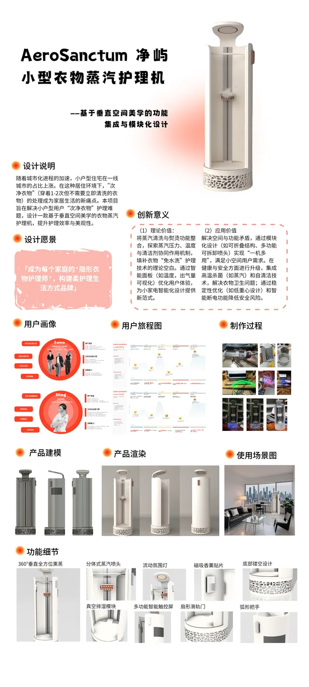
Smart Garment Steamer
Apr 2025 - Jun 2025
Vertical-space intelligent steam care machine with foldable structure, integrating steaming, UVC sterilization, and deodorizing. Saves 78% floor space while achieving 99.97% sterilization efficiency.
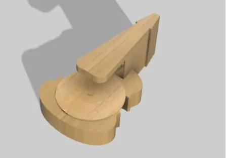
Music Painting Machine
Oct 2024 - Jan 2025
A dual-pen kinetic drawing machine that turns audio energy and music-style analysis into unique physical drawings on a rotating disc.
AI Literacy Animation
Educational Animation
An introductory animation that uses clear visual storytelling to explain Transformer and foundational artificial-intelligence concepts for beginners.